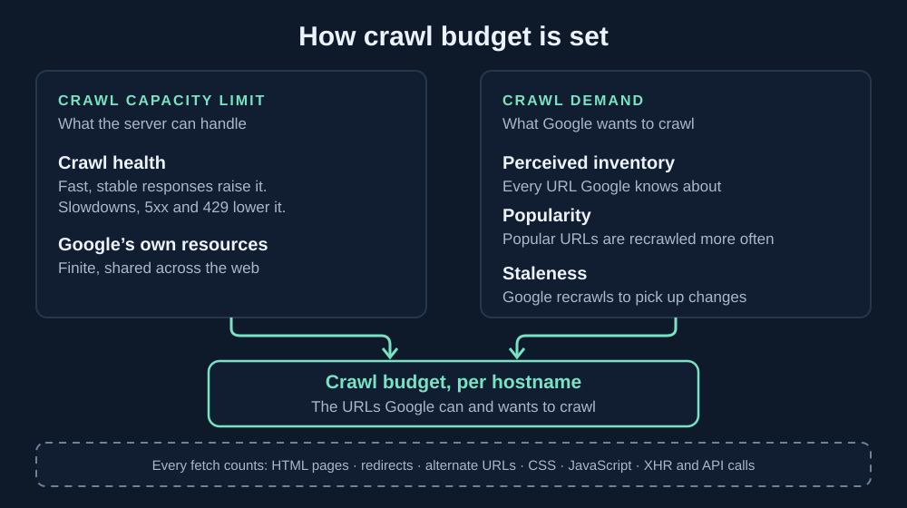
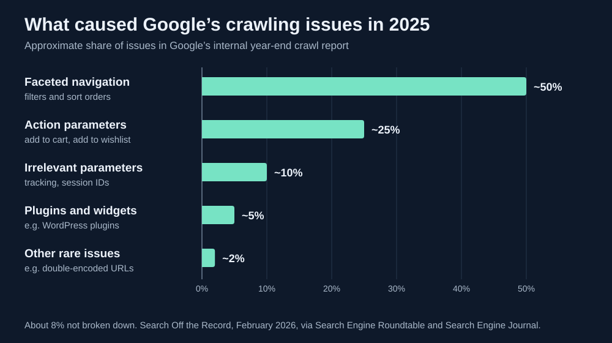
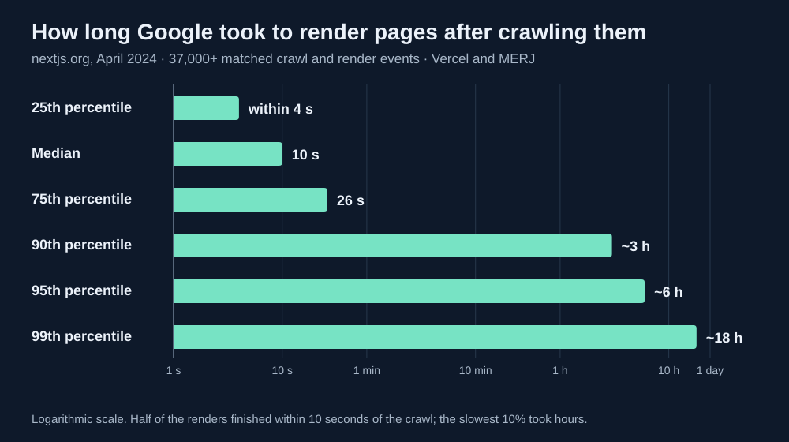

Key takeaways
- Crawl budget is the set of URLs Google can crawl without straining a server and wants to crawl. Google’s guidance starts at about a million pages, or 10,000 that change daily.
- Page count is a weak test. The useful one compares the URLs a site exposes with the pages that deserve crawling, and asks whether important changes are seen in time.
- Most crawl waste is self-inflicted. In Google’s review of 2025, faceted navigation and action parameters caused about three-quarters of crawling issues.
- JavaScript adds fetches, a render step and a delay before links are seen. Shared bundles are cached. The cost sits in per-page API calls, changing resource URLs and links that exist only after rendering.
What crawl budget is
Crawl budget is Google’s term for the set of URLs it can and wants to crawl on a site. [1] Two limits produce it. The crawl capacity limit is how much Googlebot can fetch without overloading the server: how many parallel connections it opens and how long it waits between fetches. Crawl demand is how much Google wants to crawl, based on the URLs it knows about, how popular they are and how often they change. [1][2] The lower of the two sets the pace.
Two details matter more than the definition. First, Google treats each hostname as a separate site. [1] A blog on a subdomain and a shop on www draw on different budgets. Second, the budget is counted in fetches, not pages. Gary Illyes’ 2017 post on crawl budget, since updated, says that any URL Googlebot crawls counts, including alternate URLs and embedded content such as CSS, JavaScript and AJAX (XHR) calls. [2]

Figure 1. Crawl budget is set per hostname by two limits: what the server can handle and what Google wants. It is measured in fetches, so page resources count too. Sources: [1][2][3].
Crawl budget is not a ranking factor. Illyes put it plainly: crawling is necessary to appear in results, but it is not a ranking signal. [2] A page crawled more often does not rank better for it. It only decides whether and when Google sees a page and its changes.
Page count is the wrong test
Google’s crawl budget guide is written for three kinds of site: large sites with more than a million unique pages that change about weekly, medium sites with more than 10,000 pages that change daily, and sites with many URLs reported as “Discovered – currently not indexed”. Google calls the numbers a rough estimate. [1] The Crawl Stats report says a site with fewer than a thousand pages should not need it. [4] Discussing the guideline on Google’s Search Off the Record podcast in 2025, Illyes said “1 million is okay probably”, and added that expensive database calls are “going to cost the server a lot”. [5]
These thresholds hide the variable that decides the outcome: the number of URLs a site exposes, not the number of pages it means to have. A shop with 20,000 products and filters for size, colour, brand, price and sort order can expose millions of crawlable URLs. A publisher with 200,000 articles and clean URLs may need fast crawling only for its few hundred new pages a day. The first can have a budget problem at a tenth of the second’s size.
Time is the other hidden variable. In October 2026, Illyes showed Search Central Live attendees typical and slowest times for Google’s crawling processes, based on internal analysis. Discovering a new URL typically took about 20 hours. Refreshing a known URL took about 30 days. [6] He presented them as illustrations, not guarantees, and published no methodology. A 30-day recrawl cycle is harmless for an evergreen guide and expensive for prices, stock levels, odds or job listings that change daily.
| Process | Typical | Slowest |
|---|---|---|
| Discovery of a new URL | About 20 hours | Weeks, or never |
| Refresh of a known URL | About 30 days | Weeks, or never |
| Sitemap processing | About 24 hours | Up to 14 days, or never for quality reasons |
| robots.txt update | About 24 hours | 25 hours |
| Crawl capacity update | 4 hours to 1–2 weeks | 1–3 weeks during recovery |
| Crawl demand update | About 20 hours | Weeks to months |
Table 1. Crawl timelines from Gary Illyes’ slides at Search Central Live Deep Dive Europe, October 2026, as reproduced by Search Engine Roundtable. Google described them as typical ranges from internal analysis, not service levels. Source: [6].
So the useful question is narrower than size. Does Google spend its fetches on the URLs that matter, and does it see important changes within the time the business needs?
Where crawl budget actually goes
On sites that do have a problem, the cause is usually the URL inventory. Google lists perceived inventory as a demand factor: without guidance, Googlebot tries to crawl most of the URLs it knows about, and duplicate or unwanted URLs waste that time. [1] Illyes’ 2017 post put faceted navigation and session identifiers at the top of the list of low-value URLs. [2]
The list has barely changed. In February 2026, Illyes and Martin Splitt discussed Google’s internal year-end report on crawling issues. Faceted navigation caused about half of the issues in 2025, and action parameters such as add-to-cart and add-to-wishlist links about a quarter. Irrelevant parameters such as tracking and session IDs, plugins and widgets, and oddities such as double-encoded URLs made up most of the rest. [7][8]

Figure 2. Approximate causes of the crawling issues in Google’s internal report for 2025, as described by Gary Illyes and Martin Splitt on Search Off the Record. The remaining 8% was not broken down. Sources: [7][8].
Two points from that discussion explain why Google cannot fix this alone. Googlebot cannot decide whether a URL space is worthless “unless it crawled a large chunk of that URL space”. [8] A new parameter has to be tested before it can be ignored, and on a large site the test is itself expensive. Many of the worst patterns also come from software rather than site owners. Google’s crawl team filed a bug against WooCommerce over add-to-cart parameters, which WooCommerce fixed quickly; the developer of a calendar plugin that generated infinite URL paths did not respond. [8] A plugin can create a crawl problem the site owner never sees in the CMS.
The consequence is not a penalty. Google’s faceted navigation guidance describes overcrawling as wasted time that “slows down the discovery of your important, new content”, and says that crawling these URLs always consumes server resources. [9] It is the mechanism behind the duplicate content myth: copies are filtered, not punished, but they still pull crawling and signals away from the pages that matter.
Some common fixes do not save crawl budget. A noindex tag is read only after the page is fetched, so the request is already spent. Blocking URLs in robots.txt does not free budget for other pages unless the site was already at its capacity limit, and blocked URLs stay in the crawl queue longer than URLs that return 404. [1] The fixes Google recommends change the inventory itself: consolidating duplicates, disallowing filter URLs or moving filters into URL fragments, returning 404 for filter combinations with no results, and keeping filter parameters in a consistent order. [1][9]
Capacity: the server sets the ceiling
The second limit is the server. Google raises the capacity limit when a site responds quickly and consistently, and lowers it when responses slow down, return 5xx errors or signal rate limiting with a 429. [1] Illyes’ 2026 slides showed how uneven that adjustment is. Capacity can drop within seconds when Google backs off, and recovery can take one to three weeks. [6] An afternoon of server errors can cost weeks of reduced crawling.
Speed here means server response, not page weight. In 2019, John Mueller said that reducing page size would not change crawl budget; what Google tries to avoid is opening too many simultaneous connections to a server. [10] Illyes made the same point in 2025 about database calls. [5] A page that needs several slow queries before the server can send it may cost more capacity than a heavier page served from a cache.
Caching is the most neglected part of this. Google’s crawlers support conditional requests with ETag and Last-Modified headers, so a server can answer an unchanged page with a 304 status and no body. Yet Illyes reported in 2024 that only 0.017% of Google’s fetches were cacheable, down from about 0.026% ten years earlier. [11] On a large site where most pages rarely change, 304 responses cut what each recrawl costs the server, and Google’s guide recommends supporting them. [1]
Server work has a ceiling. Google’s guide names two ways to get more crawling: more server resources when capacity is the bottleneck, or more valuable content when demand is. [1] A fast server does not make Google want pages it does not value.
Demand: when the problem is not budget at all
“Discovered – currently not indexed” is the status most often blamed on crawl budget, and Search Console’s documentation encourages that reading: Google wanted to crawl the URL but expected this to overload the site. [12] Splitt has described more causes. Googlebot may simply not have reached the URL yet, the server may be signalling overload, or a pattern of thin, low-quality content may be keeping URLs in this state. He added that Google will almost never index all the content on a site. [12]
That last point is where many crawl budget projects go wrong. Demand depends on popularity, staleness and Google’s view of the site’s quality. [1][2] Illyes’ slides put the typical time for a crawl demand update at about 20 hours, with the slowest cases taking weeks to months. [6] If Google has crawled thousands of thin pages in one section and found little worth indexing, low demand for the rest of it is a judgement, not a budget shortfall. More capacity and extra sitemaps do not change it. Better pages, fewer weak ones and stronger internal links to the pages that matter can.
What changes on JavaScript-heavy sites
JavaScript changes crawl budget in three ways. It adds fetches, it adds a render step, and it delays link discovery. For most sites, each effect is smaller than its reputation.
More fetches per page, most of them cached
A server-rendered page delivers its content and links in one response. A client-side rendered page delivers a shell. Google’s Web Rendering Service (WRS) then fetches the scripts, stylesheets and data requests needed to build the page, and each of those fetches counts toward the budget of the host that serves it. [3][13] HTTP Archive’s 2024 Web Almanac measured a median of 66 requests per mobile page and 71 per desktop page, including 22 and 24 JavaScript requests. [14]
That does not mean a JavaScript page costs Google twenty times more crawling. The WRS does not request images or video. [13] It caches what it fetches for up to 30 days, and the cache lifetime ignores HTTP caching headers. [3] A bundle shared by 100,000 product pages is fetched once and reused. The costs that grow with page count are the fetches that differ per page: API calls with a product ID in the URL, other per-page data endpoints, and resource URLs that change with every release. Google warns that cache-busting parameters can make it recrawl resources whose content has not changed, and suggests moving large, non-critical files such as video to a separate hostname with its own budget. [3]
![Diagram comparing fetches for two page types. A server-rendered HTML page needs one fetch that contains content and links, then goes to indexing. A client-side rendered page needs an HTML shell, shared JavaScript and CSS files that Google caches for up to 30 days, per-page API or XHR calls with a new URL for every page, which the cache cannot reuse, and a render queue that takes seconds to hours before content is indexed and links are found. Each fetch counts toward the crawl budget of the hostname that serves it and has its own 2MB limit.](html-vs-javascript-crawl-path-mobile.svg)
Figure 3. Where the extra crawl cost of a client-side rendered page sits. Shared bundles are fetched once and reused; per-page data requests are new URLs every time. Sources: [3][15][16][13].
Size limits apply to each fetch separately. In a March 2026 post, Illyes explained that Googlebot fetches up to 2MB of any individual URL for Search, excluding PDFs, and that each resource the WRS fetches has its own byte counter and its own 2MB limit. Bytes past the limit are not fetched, rendered or indexed. [13] For a bundle that has grown past 2MB, that is a silent failure rather than a budget problem.
A render step with a long tail
Google’s documentation says it queues every page that returns a 200 status for rendering, unless a robots meta tag or header says not to index it, and that a page may wait in the queue for a few seconds or longer. [15] In 2019, Splitt said the median time to render was five seconds and the 90th percentile was minutes. [17] The most detailed measurement since comes from Vercel and the consultancy MERJ, who tracked more than 100,000 Googlebot fetches on nextjs.org in April 2024 and matched over 37,000 of them to beacons fired when rendering finished. Every indexable HTML page that returned a 200 was fully rendered. The median delay between crawl and render was 10 seconds. The 75th percentile was 26 seconds, the 90th about three hours and the 99th about 18 hours. [16]

Figure 4. Delay between Googlebot’s crawl and the completed render on nextjs.org, April 2024, based on more than 37,000 matched crawl and render events. Logarithmic scale. Vendor study by Vercel and MERJ. Source: [16].
The tail is where the budget question sits. URLs with query strings waited longer. Their 75th percentile was 31 minutes and their 90th about 8.5 hours, against 22 seconds and 2.5 hours for URLs without them. [16] The study covers one popular site for one month, and Vercel sells hosting for the frameworks it tested. It cannot show how a slow, low-demand site with millions of parameterised URLs would fare. It does show that rendering is not the multi-week bottleneck it was once described as, and that delay grows on the URL types that already waste crawling.
Rendering also depends on what the server says first. Pages with a noindex tag in the initial HTML were not rendered, so JavaScript that removed the tag never ran. Pages that returned error codes were not rendered either. [15][16] A single-page app that answers every URL with a 200 and shows “not found” on the client turns error pages into soft 404s, which Google lists as a continuing drain on crawl budget. [1][15]
Links found later, not ranked lower
On a client-side rendered page, links that exist only after rendering cannot be followed until rendering happens. Vercel and MERJ found no difference in crawl priority between links in the initial HTML and links found after rendering, but server-rendered pages still had a slight head start. [16] Google parses links from href attributes, so navigation built on click handlers without real URLs is not crawlable at all. [15]
Google renders; most other crawlers do not
For Googlebot, Google’s position is that rendering cost is its own problem. Splitt wrote in 2024 that Google does not track how expensive individual pages are and that JavaScript is “one tiny part” of Search’s costs. [18] The measured data is broadly consistent with that.
Other crawlers behave differently. Vercel’s analysis of its network in late 2024 found that none of the major AI crawlers rendered JavaScript. OpenAI’s and Anthropic’s crawlers fetched JavaScript files but did not execute them; Gemini, which uses Google’s infrastructure, and Applebot did render. [19] It is another vendor study on one network, but the implication is direct: content and links that exist only after client-side rendering are invisible to crawlers that do not render. For JavaScript-heavy sites, that gap is a larger risk than Google’s crawl budget, and it is part of the retrieval layer the SEO vs GEO case study describes. Google itself recommends server-side rendering, static rendering or hydration, and calls dynamic rendering a workaround. [20]
HTML-heavy sites: when the page itself is the problem
Server-rendered sites have their own crawl costs. The 2MB limit applies to the HTML document, and Google’s March 2026 post names the usual causes of bloat: inline base64 images, large inline CSS and JavaScript, and megabytes of menu markup. Content past the cutoff is ignored, so Google advises keeping the title, meta tags, canonical and key structured data near the top. [13] With a median homepage HTML size of 18KB in 2024, the limit rarely binds. [14]
The heavier cost on HTML sites is usually generation, not transfer. Every faceted URL a server builds on demand means more database work, so an inventory problem that creates millions of crawlable URLs also creates the server load that lowers the capacity limit. [1][5][9]
When crawl budget matters
The evidence supports a four-part test. Page count is only the entry condition.
Inventory. Crawl budget matters when the URLs a site exposes far outnumber the pages that deserve crawling. Google’s own figures say parameters and faceted navigation account for most of the problems it sees. [7]
Freshness. It matters when important changes must be seen faster than Google’s typical cycle. If prices, stock or listings change daily and a typical refresh takes weeks, the gap costs money. [6]
Capacity. It matters when the server is the constraint: “Hostload exceeded” in the URL Inspection tool or the Page Indexing report, rising response times, or 5xx and 429 responses in Crawl Stats. [1][4]
Per-page cost. On JavaScript sites, it matters when each page triggers fetches of its own, when resource URLs change with every release, or when content and links exist only after rendering. [3][16]
The evidence for each sits in two places. Search Console’s Crawl Stats report splits Googlebot’s requests by response, file type, purpose and Googlebot type, separating discovery of new URLs from refreshes and counting fetches made for rendering as “page resource load”. [4] Server logs show which URL patterns Googlebot requests and which important pages it never reaches. In audits of sites with up to two million URLs, logs are the most direct way to see whether crawling follows the pages that earn traffic.
A site that meets none of these conditions does not have a crawl budget problem, whatever its size. A site with an inventory problem can have one well below Google’s thresholds.
Conclusion
Crawl budget matters less often than the term’s popularity suggests. On most sites, Google can crawl everything it wants. Where it cannot, the cause is rarely the number of pages. It is the number of URLs exposed, the server’s ability to answer them, and Google’s view of whether they are worth crawling. Technical fixes address the first two. Only better pages address the third.
JavaScript does not change that structure. It adds fetches, a render step and a delay before links are seen. On Google, shared resources are cached and most pages render within seconds, so the cost concentrates in per-page API calls, changing resource URLs and the long tail of low-priority URLs. The larger JavaScript risk sits outside Google, with crawlers that do not render at all. For HTML and JavaScript sites alike, the starting point is the same: compare what Googlebot fetches with what the business needs crawled.
Sources
[1] Google Crawling Infrastructure. Optimize Your Crawl Budget. Last updated July 22, 2026. https://developers.google.com/crawling/docs/crawl-budget
[2] Illyes, G. (2017). What Crawl Budget Means for Googlebot. Google Search Central Blog, January 16, 2017. https://developers.google.com/search/blog/2017/01/what-crawl-budget-means-for-googlebot
[3] Splitt, M. & Illyes, G. (2024). Crawling December: The How and Why of Googlebot Crawling. Google Search Central Blog, December 3, 2024. https://developers.google.com/search/blog/2024/12/crawling-december-resources
[4] Google Search Console Help. Crawl Stats Report. https://support.google.com/webmasters/answer/9679690
[5] Southern, M. G. (2025). Google: Database Speed Beats Page Count for Crawl Budget. Search Engine Journal, May 29, 2025. Reports Gary Illyes on Search Off the Record. https://www.searchenginejournal.com/google-database-speed-beats-page-count-for-crawl-budget/548037/
[6] Schwartz, B. (2026). Google Search Data on Crawling, Indexing & Serving Timelines. Search Engine Roundtable, October 5, 2026. Reproduces Gary Illyes’ slides from Search Central Live Deep Dive Europe; figures from Google’s internal analysis, no published methodology. https://www.seroundtable.com/google-search-crawling-indexing-serving-timelines-42225.html
[7] Schwartz, B. (2026). Google’s Top Crawling Challenges in 2025. Search Engine Roundtable, February 3, 2026. Reports the Search Off the Record episode “Crawling Challenges: What the 2025 Year-End Report Tells Us”. https://www.seroundtable.com/googles-top-crawling-challenges-for-2025-40865.html
[8] Southern, M. G. (2026). Google’s Crawl Team Filed Bugs Against WordPress Plugins. Search Engine Journal, February 3, 2026. https://www.searchenginejournal.com/googles-crawl-team-filed-bugs-against-wordpress-plugins/566491/
[9] Illyes, G. (2024). Crawling December: Faceted Navigation. Google Search Central Blog, December 17, 2024. https://developers.google.com/search/blog/2024/12/crawling-december-faceted-nav
[10] Schwartz, B. (2019). Google: Crawl Budgets & Delays Not About Page Size. Search Engine Roundtable, May 13, 2019. Reports John Mueller and Martin Splitt. https://www.seroundtable.com/google-crawl-budgets-delays-not-about-page-size-27556.html
[11] Illyes, G. (2024). Crawling December: HTTP Caching. Google Search Central Blog, December 9, 2024. https://developers.google.com/search/blog/2024/12/crawling-december-caching
[12] Schwartz, B. (2024). Google Discovered – Currently Not Indexed – Quality, Timing or Server Speed. Search Engine Roundtable, August 21, 2024. Reports Martin Splitt and quotes the Search Console documentation. https://seroundtable.com/google-on-discovered-currently-not-indexed-37931.html
[13] Illyes, G. (2026). Inside Googlebot: Demystifying Crawling, Fetching, and the Bytes We Process. Google Search Central Blog, March 31, 2026; updated October 29, 2026. https://developers.google.com/search/blog/2026/03/crawler-blog-post
[14] Smart, D. & Indigo, J. (2024). Page Weight. Web Almanac 2024, HTTP Archive, December 30, 2024. https://almanac.httparchive.org/en/2024/page-weight
[15] Google Search Central. Understand the JavaScript SEO Basics. Last updated March 4, 2026. https://developers.google.com/search/docs/crawling-indexing/javascript/javascript-seo-basics
[16] Zecchini, G., Moore, A. A., Siddle, R., Ubl, M. et al. (2024). How Google Handles JavaScript Throughout the Indexing Process. Vercel and MERJ, July 31, 2024. Vendor study; one site, one month. https://vercel.com/blog/how-google-handles-javascript-throughout-the-indexing-process
[17] Schwartz, B. (2019). Google: Median Time for GoogleBot to Render Is 5 Seconds. Search Engine Roundtable, November 14, 2019. Reports Martin Splitt at Chrome Dev Summit 2019. https://www.seroundtable.com/google-render-5sec-28532.html
[18] Schwartz, B. (2024). Google: We Don’t Track How Expensive It Is to Crawl, Render, Index & Serve Pages. Search Engine Roundtable, August 9, 2024. Reports Martin Splitt’s LinkedIn post. https://www.seroundtable.com/google-search-page-crawl-cost-37871.html
[19] Zecchini, G., Moore, A. A., Ubl, M. & Siddle, R. (2024). The Rise of the AI Crawler. Vercel and MERJ, December 17, 2024. Vendor study. https://vercel.com/blog/the-rise-of-the-ai-crawler
[20] Google Search Central. Dynamic Rendering as a Workaround. Last updated December 10, 2025. https://developers.google.com/search/docs/crawling-indexing/javascript/dynamic-rendering